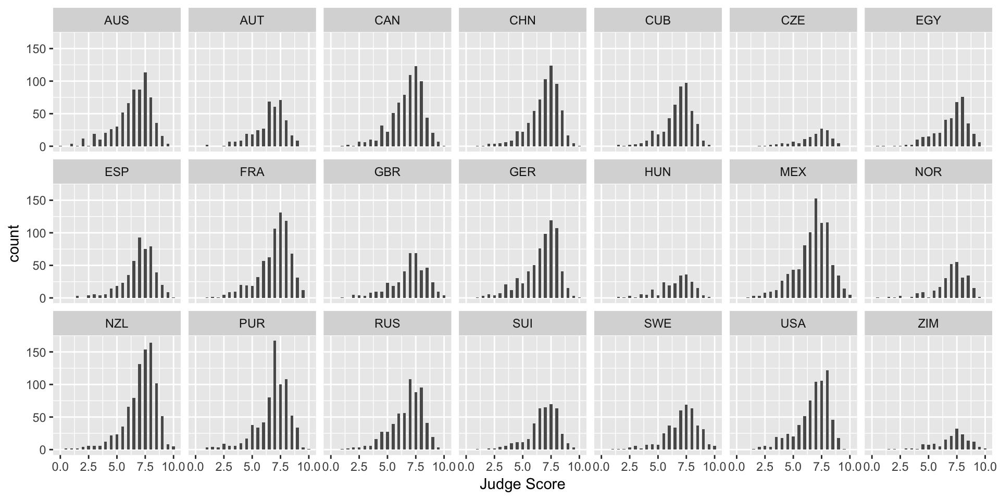
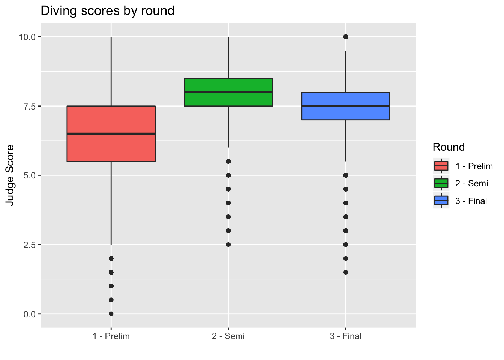
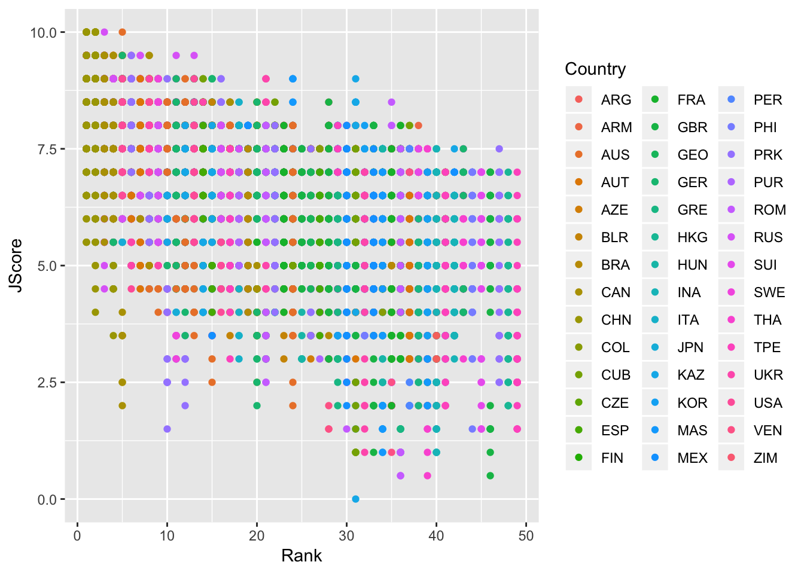
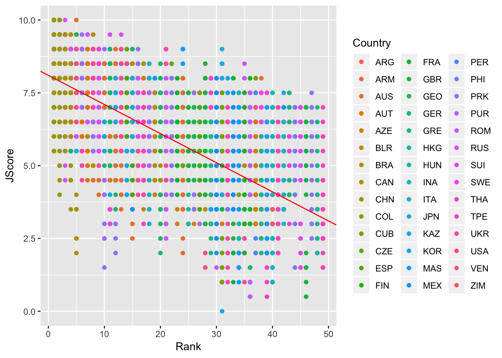
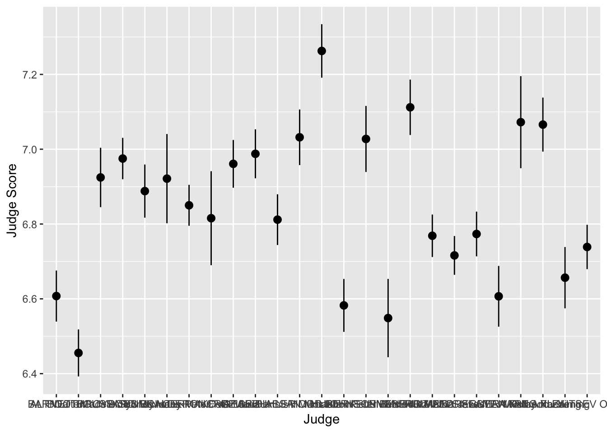

Module 5: Advanced Visualization with ggplot
Recap
In this module, we dive into more advanced data visualization with the package ggplot2. The gg stands for “grammar of graphics”, a framework for data visualization. This framework separates the process of visualization into different components: data, aesthetic mappings, and geometric objects. These components are then added together (or layered) to produce the final graph.
We load the tidyverse package and the diving dataset from Lecture 1.
> library(tidyverse)
> diving <- read_csv("data/diving.csv")- Data
The first step is to tell ggplot what data you will be graphing. This is done using the call to ggplot below. We save our graph as hist, to which we will then + layers.
> hist <- ggplot(data = diving)Note: if you change your dataset, you need to do this step again.
- Aesthetics (
aes)
Aesthetics map the data to the properties of the plot. Examples include:
x: the variable that will be on the x-axisy: the variable that will be on the y-axiscolor: the variable that categorizes data by colorshape: the variable that categorizes data by shape
You can define the aes in the ggplot call, which will then be used for all later layers, or you can define the aes in the geom (see below), which will only apply to that geom.
- Geometric Objects (
geoms)
Geometric objects, or geoms, determine the type of plot that will be created. Examples include:
geom_point(): creates a scatterplotgeom_histogram(): creates a histogramgeom_line(): creates a linegeom_boxplot(): creates a boxplot
Putting it all together:
> hist <- hist + geom_histogram(aes(x = JScore), binwidth = 0.25)We can then print the graph by seeing the output of g:
> hist
We can also add a layer to change the axis labels:
> hist <- hist + labs(x = "Judge Score")
> hist
Facets
What if we want to separate the judges’ scores by country? We can use facets. Facets allow you to separate graphs by category. We do not need to redo our above code for the histogram - we only need to add a facet layer to our graph hist. The first argument of facet_wrap is the column of our dataset that contains the category information. Note that we need a tilde (~) in front of JCountry: later in the course we will discuss why this is needed. The second argument of facet_wrap specifies the number of rows for which to display the graphs.
> hist <- hist + facet_wrap(~ JCountry, nrow = 3)
> hist
Let’s plot the median diving score over the histograms by adding a geom_vline. This adds a vertical line (i.e. vline) to your plot.
> median_score <- median(diving[["JScore"]])
> hist <- hist + geom_vline(xintercept = median_score, color = "red")
> hist
Note: color is not in aes in the above code because it is a single value. In the next example, each category has a different color, so color is in aes.
Exercise
Create a histogram of the diving scores with your own choice of category for facet_wrap (i.e. not by country).
Boxplots
Boxplots are also an important visualization tool. We now create boxplots of the judges’ scores, separated by diving round. Here we use the aes property fill = Round to color (or “fill”) the boxplots by country.
> box <- ggplot(data = diving)
> box <- box + geom_boxplot(aes(x = Round, y = JScore, fill = Round))
> box <- box + labs(title = "Diving scores by round", x = "", y = "Judge Score", fill = "Round")
> box
We can also remove the unnecessary x-axis ticks and labels as the legend on the right is sufficient. We do so using the theme layer:
> box <- box + theme(axis.title.x = element_blank(), axis.text.x = element_blank(), axis.ticks.x = element_blank())
> box
Barplots
We can also create barplots using geom_bar:
> bar <- ggplot(data = diving)
> bar <- bar + geom_bar(aes(x = JCountry, fill = JCountry))
> bar <- bar + labs(x = "Judge Country", fill = "Judge Country")
> bar
Scatterplots
Now let’s turn back to scatterplots, which were introduced in Module 2. We plot judges’ score versus rank of the diver. As we expect, the higher the divers’ rank, the higher their score.
> scatter <- ggplot(data = diving)
> scatter <- scatter + geom_point(aes(x = Rank, y = JScore, color = Country))
> scatter
Lines
We can also add an abline to our scatterplot - that is, a line where we specify the y-intercept (intercept) and the slope (slope):
> scatter <- scatter + geom_abline(intercept = 8.1, slope = -0.1, color = "red")
> scatter
Note: geom_abline is different from geom_line: geom_line “connects the dots” between your data and so doesn’t have to be a straight line, whereas geom_abline draws a straight line with the specified slope and y-intercept.
Other geom for lines are: - geom_vline: to add a vertical line to a plot - geom_hline: to add a horizontal line to a plot
Stats
We can also specify a layer using stat_, which stands for statistical transformation. This is useful if we want to plot a summary statistic of our data, such as a mean or median. By using a stat_ layer, we do not have to compute this summary statistic beforehand - ggplot will compute the summary statistic for us and then plot the result.
For example, suppose we want to plot the means of each judge’s score and provide error bars of one standard deviation on either side of the mean. We could use summarize and group_by to find the mean and standard deviations for each judge, or we could just use a stat_ layer!
The layer stat_summary() computes and then plots a user-specified summary statistic. We choose the option mean_se to calculate the means and standard deviations of the scores of each judge.
As always, we set up the plot by calling ggplot, specifiying data = diving and then providing the aes. In this case, we want the judge on the x-axis and their scores on the y-axis. We then add out stat_summary layer.
> judges <- ggplot(data = diving, aes(x = Judge, y = JScore))
> judges <- judges + stat_summary(fun.data = mean_se)
> judges <- judges + labs(y = "Judge Score")
> judges
We can see that the judges’ names are bunched together… ideally we would want their names to be horizontal to make it easier to read. Luckily, ggplot has an easy fix for this!
> judges <- judges + coord_flip()
> judges
Scales
Scales allow you to adjust the aesthetics or visual aspects of a plot. We return to the scatter plot of the judges’ scores vs rank of the divers. This time, we want to color the points by the difficulty of the dive.
We use the layer:
scale_color_distiller
Above, the second word, color, is the aes we want to change. We can replace it with x, y or fill, depending on the aes we want to change.
The third word is distiller, which we use because our color variable, Difficulty, is continuous. If it were discrete, we would write brewer instead.
> scatter <- ggplot(data = diving)
> scatter <- scatter + geom_point(aes(x = Rank, y = JScore, color = Difficulty))
> scatter <- scatter + scale_color_distiller(palette = "OrRd", direction = 1)
> scatter
Interestingly, it seems that some of the highest ranked divers perform most of the less difficult dives, but perform these easy dives very well.
To further investigate, we plot a 2D histogram of Rank vs Difficulty.
> hist <- ggplot(data = diving)
> hist <- hist + geom_bin2d(aes(x = Rank, y = Difficulty))
> hist <- hist + scale_fill_distiller(palette = "Spectral")
> hist
Note that we use fill instead of color in scale_fill_distiller to control the fill of the histogram bins.
From the 2D histogram, we can see that the higher ranked divers attempt both more difficult and less difficult dives, unlike the lower ranked divers who only attempt more difficult dives.
ColorBrewer
The palettes used in this module, including “OrRd” and “Spectral”, come from ColorBrewer. You can take a look at the website and use some of these color palettes in your plots!